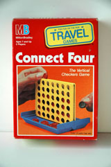
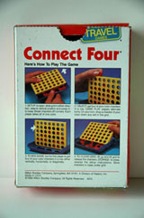
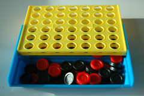
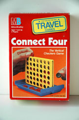
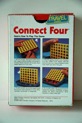
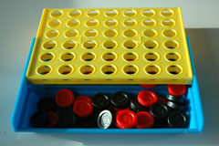
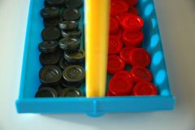
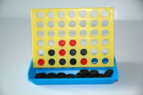

|  |  |  |

|

History
Connect 4 or Four-in-a-Row has its roots in Tic-Tac-Toe, a simple three in a row pencil and paper game. The object of the game is to get four pieces in a row. Four-In-A-Row, also, adds the element of restricted placement by requiring the players to "drop" the pieces vertically down the board. In America, this game was popularized under the name Connect Four. The name “Connect Four” was first coined by Milton Bradley Company in 1974. The company was founded by Milton Bradley in Springfield, Massachusetts in 1860. The company is known for its contributions in the board game and video game industries.
Game Play
The Pieces:
The official pieces for Connect Four are 42 black and red checkered playing pieces (21 of each color). Due to the playing board, anything aside from checkered pieces proves to be rather inefficient since most substituted pieces don’t stack well with each other.
Rules:
To move: Each player takes alternating turns. During each player’s turn, drop a colored piece of that player’s color into the slots of the game board.
To win: To get three in a row, vertically, horizontally or diagonally.
The players take turns dropping pieces into the slots. These pieces fall to the bottom of the board and the game continues until one player has four in a row and wins or until the board fills up, which results in a tie.
Strategies:
For beginners, remember to check all possible connecting lines, including horizontal, vertical and diagonal lines for possible threats. The more advanced player
knows that a key strategy to win is by making two simultaneous threats for the opponent. Usually this involves connecting three discs to prevent the opponent from having an advantage in that column. Also, remember that discs placed in the middle
are more valuable then those place on the sides because players have more chances of creating four in a row with them.
Variants:
Misere: To force your opponent into getting three in a row.
Alternate Names:
Connect Four has also been known as “Four in a Row” or “Plot Four”.
Pictures:
|  |  |  |
|
|  |  |
References:
Milton Brady Company, Connect Four, 1989
Connect Four, Wikipedia, the Free Encyclopedia, 2006
External links:
Wikipedia Connect Four
Official Connect 4 Website